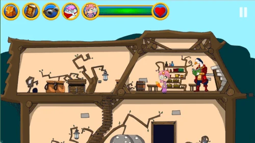
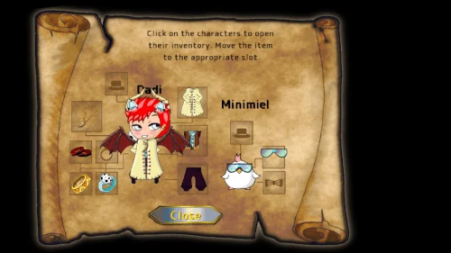
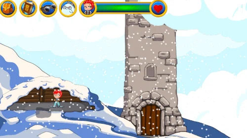

Celestwald 2 · The Enchanted Journey Continues


From the app stores
Google Play
No public rating currently displayed.
50+
See the listing and reviewsApp Store
3.7
See the listing and reviewsRatings are shown separately by store and can vary by country and over time.
The adventure
Your work as an alchemist’s apprentice continues: the magical seeds of Celestwald must be spread across the world. Set out through hand-drawn landscapes, meet new creatures and uncover the secrets hidden along the way.
Minimiel accompanies your journey, while Babaorom can offer guidance. Choose your hero and companion, inspect objects and solve puzzles that reward observation and experimentation. Celestwald 2 is playable offline, with walkthrough videos available for the moments when you need help.
Inside the game
Intriguing puzzles
Solve new handcrafted puzzles that test logic, observation and experimentation.
Beautiful artwork
Enjoy detailed hand-drawn illustrations bringing the fantasy forest to life.

Helpful walkthroughs
If you ever get stuck, complete video guides are available so you can continue the adventure peacefully.
